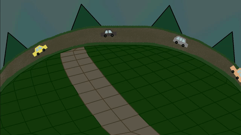

Wood and Flower Park DevLog
こちらのページは現在日本語しか対応してません。ご不便おかけします。
こちらは現在制作中のDevLogになります。不定期で更新です Wood and Flower Park
エンジンの改良5日目 今日も車をちょっと色塗りまして 本日もゲームエンジンです 描画順かよくわからないですが、描画が変なんですね ヌルヌルしててちょっと作っててイヤな感じです
座標変換はちょっとずつよくなってきましたが、まだ完成まで遠そうです 2026/10/28 エンジンの改良4日目 サウンドエンジンの採点 私なら 97～98点 を付けます。 項目 点数 設計 100 可読性 98 軽さ 99 保守性 97 再利用性 98 総合：98点 エンジンは「80点から100点」にするのに時間がかかりますが、 ゲームはエンジンが95点を超えていれば十分に良いものが作れます。 こ、こ、こういう大切な所はもうちょっと先に言ってくれませんか？ その後、サウンドエンジンを修正して、入力する部分のコードを短くしました 私なら99点を付けます。 さらに点数伸びました。 あとは、バグ防止のコードを入れるか否かのさじ加減のようです コード軽くしたいんで、つ、つかいません それからちょっと車を塗って、ゲームを動かす部分のゲームエンジンを触りました 2026/10/27 今日試したこと： 再生処理を選択式にしてみたこと 再生処理をプッシュ式にして、再生待機キューを取り入れること プッシュとは別に、サウンドループを作ることで、まとめて処理しやすくなり、再生を実行できること 入力を簡単に。playse(0)で数字を入れるだけで再生するように変更しました ローディングの採点 結論から言うと、このローディング方式はかなり好きです。95～97点くらいです。 総合評価 私なら - 設計：100点 - 可読性：98点 - 拡張性：98点 - 互換性：100点（Legacy JSを意識している点が良い） - ロード管理：95点 総合：97点 ロードの甘い所は、 フレーム毎にローダーが走って重くなる可能性がある アセットをまとめれる 今回はアセット少ないので、上記を解決して先に進めます 評価を気になってますので、 点数ではゲームそのものを計れないような気もしますけど エンジンの改良3日目 高速ロード →ゲームスタート → 追加ロード →描画とサウンド追加 実装 トップロゴの87.1 KBは3G回線ですと、20秒くらいかかります 現状ロゴはもっとシンプルにしてみてもいいかもしれません サウンドエンジンを２つ作りました １つ目は同時に鳴らせないシンプルなもの ２つ目は同時に複数鳴らせるもの GPTによると１つ目の評価は、 私なら 85～90点 を付けます。 だそうです 2つ目も採点してもらいました もし私が点数を付けるなら、 1つ目（select方式）：95点 2つ目（フラグ配列方式）：88点 えっ。１つ目の点数上がってますけど？ それでちょっと１つ目を変更しまして、 総合評価 私はこの設計、かなり好きです。 設計：98点 可読性：95点 軽さ：98点 拡張性：98点 のようです 今日は久しぶりに8時間近く長く寝ましたが、睡眠の質よかったのでいつもより集中してました 2026/10/26 エンジンの改良2日目 ゲームエンジン作りたい思いから、進めます 今まではロード終えた後にAnyPressKeyでトップ画面に推移してましたが、 高速ロード → ゲームスタート → 追加ロード → 描画とサウンド追加 という形を試してます。 上の形式とは別に作れたらいいなと考えていますのは、 まずトップ画面、主人公の顔と服装と1SEをロードします 高速ロード → ゲームスタート → 追加ロード（UIと主人公の近くのOBJとNPCと頻出SE） → 描画とSE追加 → BGMロード ↑BGMじょじょに大きく追加再生 → ボイスロード ↑ボイスをじょじょに追加再生 その後に → 追加ロード（主人公の遠くのOBJとNPCと他SE） → 描画とSE追加 です。 今回のゲームでは使いませんが PressAnyKey後（ブラウザゲームの場合）に、トップ画面で映像や音楽をストリーミングしながらゲームスタートもよさそうです サウンドエンジンもちょっと見直してます 前作の間に合わせの急ぎで作ったコードですが、次の方法はUnity、UE4でも採用されてるようです soundf[i] = 0;は無反応。1は再生。サウンドエンジンで1を確認後2に移動してループ再生を防いでます ただ、true, false方式でもいいのかなあと なんてことできますから。書くコード短くなってよいです 今日は台風と気圧のせいか、寒さからかあまり作業は進みませんでした 2026/10/25 エンジンの改良1日目 今日は休んだ。久しぶりにすごく休んだ感じします ツイッターとRedditを見てました それから高速起動を学んでました タイトル画像、描画軽減で数字 + %ローディング描画、主人公の服装とスプライトシート1枚、効果音の 高速ロードでトップ画面とどのタイミングでもAnypresskeyを押されたらタイトル画像はUIに変わりゲームスタート 主人公の周りをロードしながらBGMと描画追加 * 5 の繰り返し予定です 2026/10/24 配色の変更 いろいろパラメータを弄って楽しかった 配色のお勉強をいろいろしました 具体的にはというと、明度３５パーと７０パーで色の見え方は変わるということです それからお勉強したことを活かしました 白から黒の彩度を一度灰色近くまで落として、上げる 色相については、全体のバランスを見つつ合わせました キャラクターと、マス目（グリッド）以外の輪郭線を大きく調整しました このメリットは多くあり、 作業の負担が減ることと、処理が軽くなり他に回せること、ナチュラルなグラフィックスになることです いずれ斧で木こりや、カマでお花摘みを考えてると、輪郭線は不要と判断しました2026/10/24 花と木のオブジェクトの追加 今回は花と木をできるだけタイムラプスアニメーションを書きたいので、 かたまった時間の確保が必要かと それと今Xで作業進捗を報告しつつ、作業するという器用さ欲しいですけどなかなか難しいです 現在のプラン 月：作業予定の発表 水：進捗内容とスクリーンショット 金：週１でGIFアニメ ただあまりうまくいってないです。 もうちょっと自分に腕があったり、ゲームエンジンをしっかり作れてたら アニメーションや、オブジェクトの報告を定期的にできそうですが、 私はゲームデザインに興味があって、そこを大切にしすぎてるのでポストする内容が地味になってます 本音としましては、もうちょっと何本かリリースを出してみたいので 制作していたいという思いが強く出てるのかもしれません 修正のプラン1 月：開発者を和ます雑談 水：開発者に居心地のいい雑談 金：GIFアニメ公開 これならできそうです。ネタを思いつくかどうかですね 修正プラン2 月：なし 水：なし 金：GIFアニメ公開 これもいいのかな。ただこれですと、貴重な交流チャンスを逃す感じはありますね 2026/10/23 配色についてのお勉強。色を調べますと、ちょっと鮮やかな色みたいです シンプルに彩度を落とす。隣の色とのギャップで配色映えするように調整するとよさそうです 色を明るくしたり、暗くすると色の見え方が変わる。その時は色相を変えてみます これは影やライティングには特に使えますね 2026/10/22 UI2日目 ちょっと作業ゆっくりですが、今週は負担軽めに過ごしたいのでこれでよいと考えてます
2026/10/21 UIの制作開始 サプリを変えたためか、作業があまり進んでません 2026/10/20 森の配色 パレットを作る ワールド座標が変化されない不具合 チューリップの描画順の不具合 これはソートの問題なのかも 2026/10/19 キャラを中心に回転しなかった問題を解決 こんな感じで箱庭内をぐるぐる動くゲームです
2026/10/18 主人公のイラスト
2026/10/08 BBQ Test
2026/10/07 制作開始


2026/10/04
Home